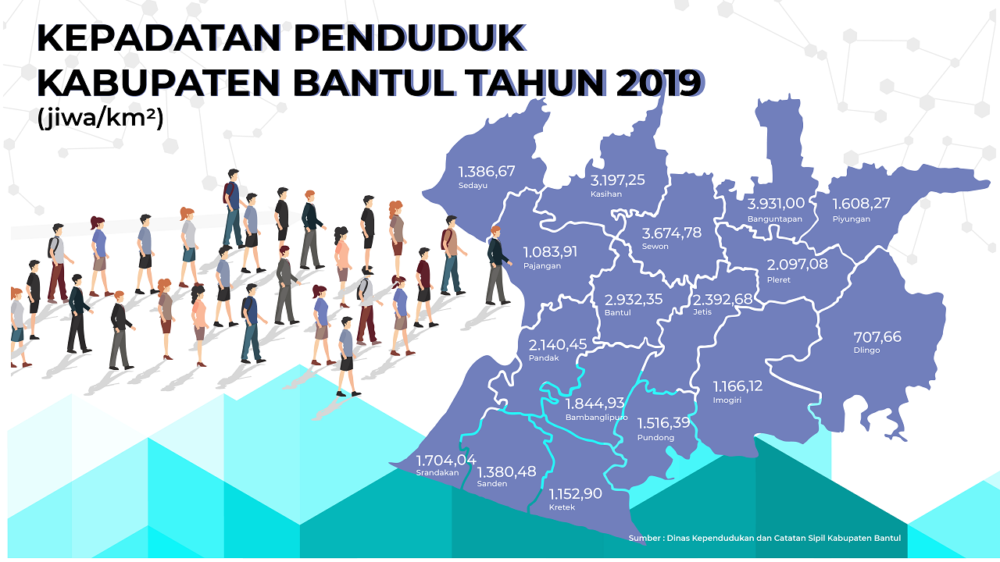
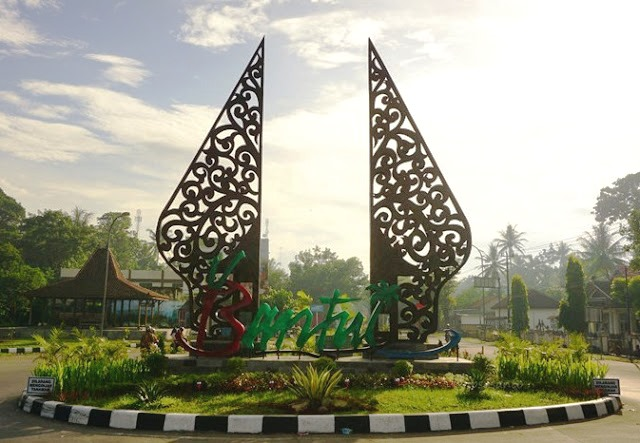
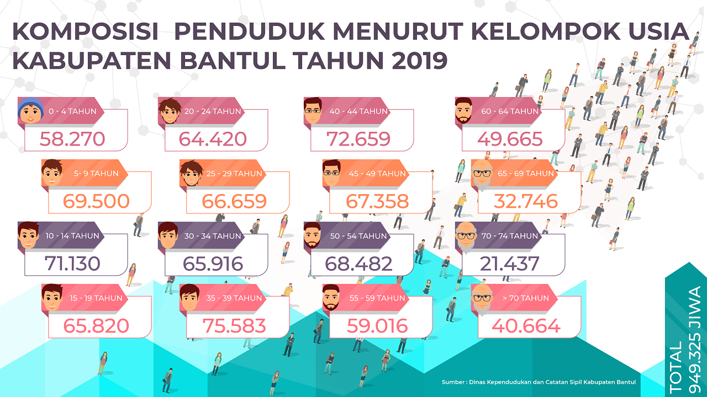

WebGIS ini dikembangkan sebagai media visualisasi spasial untuk menampilkan distribusi kepadatan penduduk di Kabupaten Bantul. Data yang digunakan telah diklasifikasikan ke dalam tiga kategori utama, yaitu kepadatan rendah, sedang, dan tinggi, sehingga memudahkan dalam memahami pola persebaran penduduk secara lebih sistematis.
Melalui pendekatan berbasis WebGIS, pengguna dapat berinteraksi langsung dengan peta, seperti melakukan zoom, melihat informasi atribut wilayah, serta memahami kondisi kependudukan secara lebih intuitif. Visualisasi ini diharapkan dapat membantu dalam analisis wilayah, perencanaan pembangunan, serta pengambilan keputusan yang berkaitan dengan aspek kependudukan.

Kawasan Padat Penduduk

Potret Kabupaten Bantul

Komposisi Penduduk